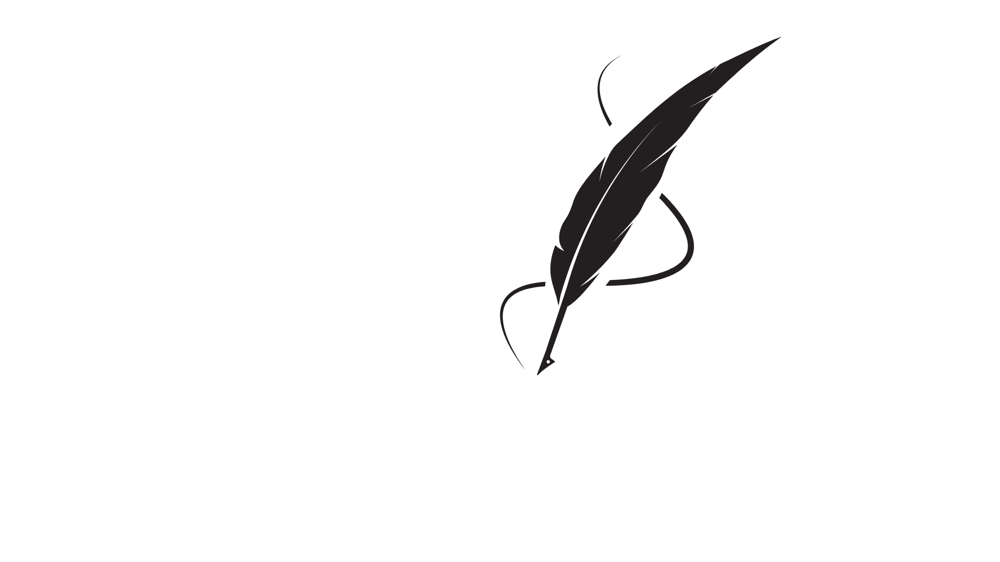
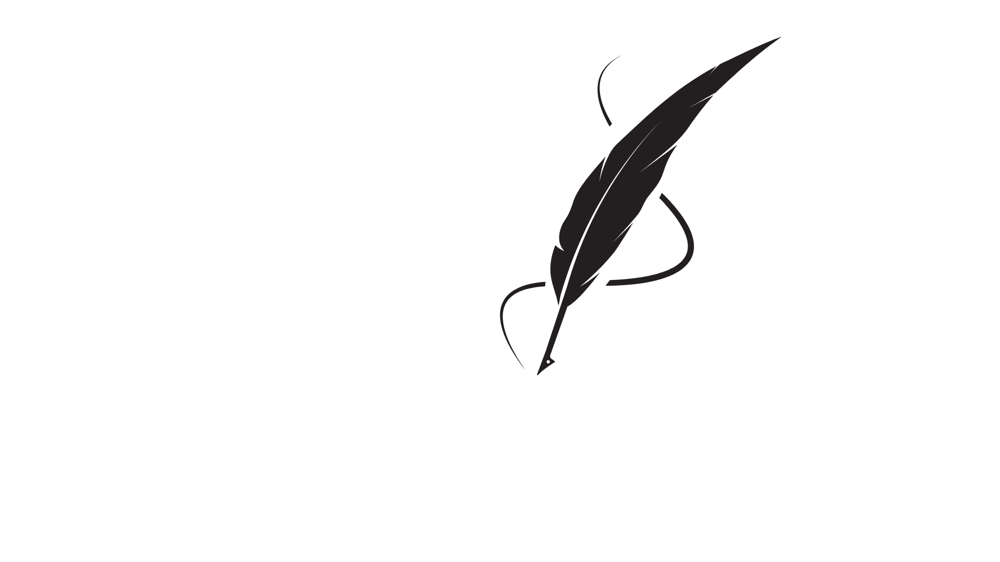

.png) 

Kesimpulan :
SDGs atau Sustainable Development Goals adalah inisiatif global yang diterapkan oleh PBB untuk mencapai pembangunan yang berkelanjutan dengan tujuan utama untuk menciptakan keseimbangan antara aspek-aspek sosial, ekonomi, dan lingkungan. Dengan 17 tujuan yang mencakup pengentasan kemiskinan, perlindungan lingkungan, peningkatan kualitas hidup, dan pemerintahan yang lebih adil, SDGs bertujuan untuk menciptakan dunia yang lebih inklusif dan berkelanjutan.
Indonesia telah menunjukkan komitmen yang kuat dalam mendukung pencapaian SDGs, termasuk SDG 16 yang berfokus pada perdamaian, keadilan, dan penguatan institusi. Beberapa langkah konkret yang telah dilakukan Indonesia antara lain:
- Pemberantasan Korupsi: Indonesia memiliki Komisi Pemberantasan Korupsi (KPK) yang berperan aktif dalam memberantas korupsi di tingkat pemerintahan dan sektor swasta.
- Reformasi Peradilan: Indonesia telah melakukan berbagai upaya untuk memperbaiki sistem peradilan, dengan menciptakan lembaga-lembaga baru dan memperkuat transparansi dalam proses peradilan.
- Peningkatan Keadilan Sosial: Pemerintah Indonesia juga melakukan program pengentasan kemiskinan dan ketimpangan sosial, seperti Program Keluarga Harapan (PKH) dan Bantuan Langsung Tunai (BLT), untuk memastikan akses yang lebih baik terhadap kebutuhan dasar masyarakat.
Selain itu, Indonesia juga aktif dalam berbagai inisiatif untuk mendukung tujuan SDGs lainnya, termasuk mempromosikan energi terbarukan, mengurangi emisi karbon, serta memperbaiki kualitas pendidikan dan kesehatan.
17 Tujuan SDGs
- Penghapusan Kemiskinan: Mengurangi jumlah orang yang hidup dalam kemiskinan ekstrem di seluruh dunia.
- Penghapusan Kelaparan: Meningkatkan ketahanan pangan dan mengurangi kelaparan di seluruh dunia.
- Kesehatan yang Baik dan Kesejahteraan: Meningkatkan akses terhadap pelayanan kesehatan yang berkualitas dan mengurangi angka kematian ibu dan anak.
- Pendidikan Berkualitas: Memastikan akses pendidikan yang inklusif dan berkualitas untuk semua.
- Kesetaraan Gender: Meningkatkan kesetaraan gender dan memberdayakan perempuan dalam segala aspek kehidupan.
- Air Bersih dan Sanitasi: Menjamin akses universal terhadap air bersih dan sanitasi yang layak.
- Energi Bersih dan Terjangkau: Meningkatkan akses terhadap energi yang bersih, terjangkau, dan berkelanjutan.
- Pekerjaan Layak dan Pertumbuhan Ekonomi: Mendorong pertumbuhan ekonomi yang inklusif dan menciptakan pekerjaan yang layak untuk semua.
- Industri, Inovasi, dan Infrastruktur: Meningkatkan pembangunan infrastruktur yang berkelanjutan dan mendorong inovasi industri.
- Pengurangan Ketimpangan: Mengurangi ketimpangan antar negara dan di dalam negara.
- Kota dan Pemukiman yang Berkelanjutan: Membuat kota dan pemukiman lebih inklusif, aman, dan berkelanjutan.
- Konsumsi dan Produksi yang Bertanggung Jawab: Mendorong pola konsumsi dan produksi yang berkelanjutan.
- Perubahan Iklim: Mengambil langkah-langkah untuk melawan perubahan iklim dan dampaknya.
- Kehidupan Bawah Air: Melindungi dan memulihkan ekosistem laut serta sumber daya laut.
- Kehidupan di Darat: Melindungi, memulihkan, dan mengelola ekosistem daratan secara berkelanjutan.
- Perdamaian, Keadilan, dan Institusi yang Kuat: Meningkatkan institusi yang kuat, memastikan akses terhadap keadilan, dan memerangi kekerasan dan korupsi.
- Kemitraan untuk Tujuan: Meningkatkan kerjasama internasional untuk mendukung pencapaian SDGs.